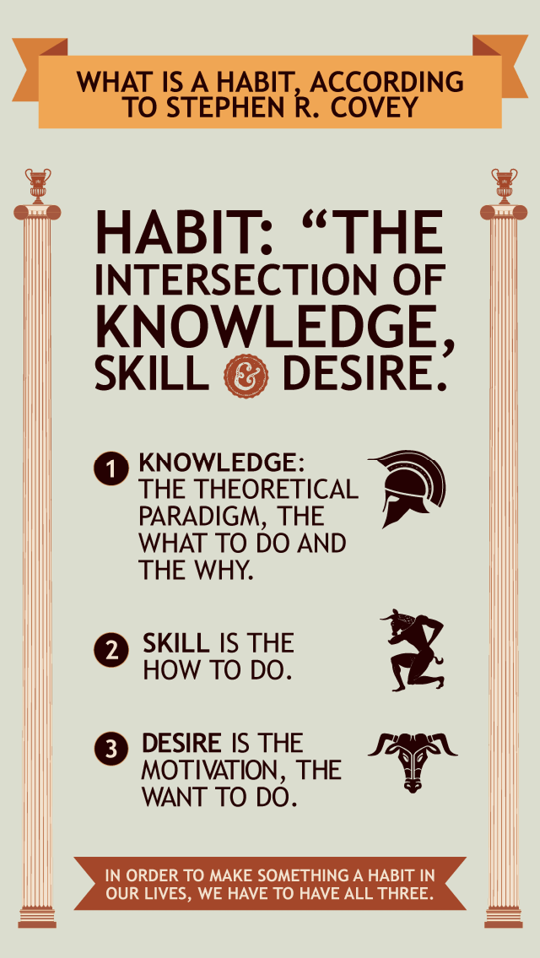
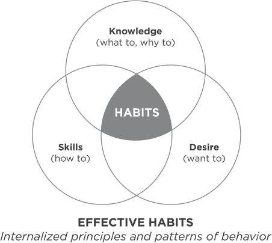

We are what we repeatedly do.
Excellence, then, is not an act, but a habit.
ARISTOTLE
Our character, basically, is a composite of our habits. “Sow a thought, reap an action; sow an action, reap a habit; sow a habit, reap a character; sow a character, reap a destiny,” the maxim goes.
Habits are powerful factors in our lives. Because they are consistent, often unconscious patterns, they constantly, daily, express our character and produce our effectiveness… or ineffectiveness.
As Horace Mann, the great educator, once said, “Habits are like a cable. We weave a strand of it every day and soon it cannot be broken.” I personally do not agree with the last part of his expression. I know they can be broken. Habits can be learned and unlearned. But I also know it isn’t a quick fix. It involves a process and a tremendous commitment.
Those of us who watched the lunar voyage of Apollo 11 were transfixed as we saw the first men walk on the moon and return to earth. Superlatives such as “fantastic” and “incredible” were inadequate to describe those eventful days. But to get there, those astronauts literally had to break out of the tremendous gravity pull of the earth. More energy was spent in the first few minutes of lift-off, in the first few miles of travel, than was used over the next several days to travel half a million miles.
Habits, too, have tremendous gravity pull—more than most people realize or would admit. Breaking deeply imbedded habitual tendencies such as procrastination, impatience, criticalness, or selfishness that violate basic principles of human effectiveness involves more than a little willpower and a few minor changes in our lives. “Lift off” takes a tremendous effort, but once we break out of the gravity pull, our freedom takes on a whole new dimension.
Like any natural force, gravity pull can work with us or against us. The gravity pull of some of our habits may currently be keeping us from going where we want to go. But it is also gravity pull that keeps our world together, that keeps the planets in their orbits and our universe in order. It is a powerful force, and if we use it effectively, we can use the gravity pull of habit to create the cohesiveness and order necessary to establish effectiveness in our lives.
“HABITS” DEFINED
For our purposes, we will define a habit as the intersection of knowledge, skill, and desire.

Knowledge is the theoretical paradigm, the what to do and the why. Skill is the how to do. And desire is the motivation, the want to do. In order to make something a habit in our lives, we have to have all three.
I may be ineffective in my interactions with my work associates, my spouse, or my children because I constantly tell them what I think, but I never really listen to them. Unless I search out correct principles of human interaction, I may not even know I need to listen.
Even if I do know that in order to interact effectively with others I really need to listen to them, I may not have the skill. I may not know how to really listen deeply to another human being.
But knowing I need to listen and knowing how to listen is not enough. Unless I want to listen, unless I have the desire, it won’t be a habit in my life. Creating a habit requires work in all three dimensions.
The being/seeing change is an upward process—being changing seeing, which in turn changes being, and so forth, as we move in an upward spiral of growth. By working on knowledge, skill, and desire, we can break through to new levels of personal and interpersonal effectiveness as we break with old paradigms that may have been a source of pseudo-security for years.
It’s sometimes a painful process. It’s a change that has to be motivated by a higher purpose, by the willingness to subordinate what you think you want now for what you want later. But this process produces happiness, “the object and design of our existence.” Happiness can be defined, in part at least, as the fruit of the desire and ability to sacrifice what we want now for what we want eventually.

THE MATURITY CONTINUUM
The Seven Habits are not a set of separate or piecemeal psych-up formulas. In harmony with the natural laws of growth, they provide an incremental, sequential, highly integrated approach to the development of personal and interpersonal effectiveness. They move us progressively on a Maturity Continuum from dependence to independence to interdependence.
We each begin life as an infant, totally dependent on others. We are directed, nurtured, and sustained by others. Without this nurturing, we would only live for a few hours or a few days at the most.
Then gradually, over the ensuing months and years, we become more and more independent—physically, mentally, emotionally, and financially—until eventually we can essentially take care of ourselves, becoming inner-directed and self-reliant.
As we continue to grow and mature, we become increasingly aware that all of nature is interdependent, that there is an ecological system that governs nature, including society. We further discover that the higher reaches of our nature have to do with our relationships with others—that human life also is interdependent.
Our growth from infancy to adulthood is in accordance with natural law. And there are many dimensions to growth. Reaching our full physical maturity, for example, does not necessarily assure us of simultaneous emotional or mental maturity. On the other hand, a person’s physical dependence does not mean that he or she is mentally or emotionally immature.
On the maturity continuum, dependence is the paradigm of you—you take care of me; you come through for me; you didn’t come through; I blame you for the results.
Independence is the paradigm of I—I can do it; I am responsible; I am self-reliant; I can choose.
Interdependence is the paradigm of we—we can do it; we can cooperate; we can combine our talents and abilities and create something greater together.
Dependent people need others to get what they want. Independent people can get what they want through their own effort. Interdependent people combine their own efforts with the efforts of others to achieve their greatest success.
If I were physically dependent—paralyzed or disabled or limited in some physical way—I would need you to help me. If I were emotionally dependent, my sense of worth and security would come from your opinion of me. If you didn’t like me, it could be devastating. If I were intellectually dependent, I would count on you to do my thinking for me, to think through the issues and problems of my life.
If I were independent, physically, I could pretty well make it on my own. Mentally, I could think my own thoughts, I could move from one level of abstraction to another. I could think creatively and analytically and organize and express my thoughts in understandable ways. Emotionally, I would be validated from within. I would be inner directed. My sense of worth would not be a function of being liked or treated well.
It’s easy to see that independence is much more mature than dependence. Independence is a major achievement in and of itself. But independence is not supreme.
Nevertheless, the current social paradigm enthrones independence. It is the avowed goal of many individuals and social movements. Most of the self-improvement material puts independence on a pedestal, as though communication, teamwork, and cooperation were lesser values.
But much of our current emphasis on independence is a reaction to dependence—to having others control us, define us, use us, and manipulate us.
The little-understood concept of interdependence appears to many to smack of dependence, and therefore, we find people, often for selfish reasons, leaving their marriages, abandoning their children, and forsaking all kinds of social responsibility—all in the name of independence.
The kind of reaction that results in people “throwing off their shackles,” becoming “liberated,” “asserting themselves,” and “doing their own thing” often reveals more fundamental dependencies that cannot be run away from because they are internal rather than external—dependencies such as letting the weaknesses of other people ruin our emotional lives or feeling victimized by people and events out of our control.
Of course, we may need to change our circumstances. But the dependence problem is a personal maturity issue that has little to do with circumstances. Even with better circumstances, immaturity and dependence often persist.
True independence of character empowers us to act rather than be acted upon. It frees us from our dependence on circumstances and other people and is a worthy, liberating goal. But it is not the ultimate goal in effective living.
Independent thinking alone is not suited to interdependent reality. Independent people who do not have the maturity to think and act interdependently may be good individual producers, but they won’t be good leaders or team players. They’re not coming from the paradigm of interdependence necessary to succeed in marriage, family, or organizational reality.
Life is, by nature, highly interdependent. To try to achieve maximum effectiveness through independence is like trying to play tennis with a golf club—the tool is not suited to the reality.
Interdependence is a far more mature, more advanced concept. If I am physically interdependent, I am self-reliant and capable, but I also realize that you and I working together can accomplish far more than, even at my best, I could accomplish alone. If I am emotionally interdependent, I derive a great sense of worth within myself, but I also recognize the need for love, for giving, and for receiving love from others. If I am intellectually interdependent, I realize that I need the best thinking of other people to join with my own.
As an interdependent person, I have the opportunity to share myself deeply, meaningfully, with others, and I have access to the vast resources and potential of other human beings.
Interdependence is a choice only independent people can make. Dependent people cannot choose to become interdependent. They don’t have the character to do it; they don’t own enough of themselves.
That’s why Habits 1, 2, and 3 in the following chapters deal with self-mastery. They move a person from dependence to independence. They are the “Private Victories,” the essence of character growth. Private victories precede public victories. You can’t invert that process any more than you can harvest a crop before you plant it. It’s inside-out.
As you become truly independent, you have the foundation for effective interdependence. You have the character base from which you can effectively work on the more personality-oriented “Public Victories” of teamwork, cooperation, and communication in Habits 4, 5, and 6.
That does not mean you have to be perfect in Habits 1, 2, and 3 before working on Habits 4, 5, and 6. Understanding the sequence will help you manage your growth more effectively, but I’m not suggesting that you put yourself in isolation for several years until you fully develop Habits 1, 2, and 3.
As part of an interdependent world, you have to relate to that world every day. But the acute problems of that world can easily obscure the chronic character causes. Understanding how what you are impacts every interdependent interaction will help you to focus your efforts sequentially, in harmony with the natural laws of growth.
Habit 7 is the habit of renewal—a regular, balanced renewal of the four basic dimensions of life. It circles and embodies all the other habits. It is the habit of continuous improvement that creates the upward spiral of growth that lifts you to new levels of understanding and living each of the habits as you come around to them on a progressively higher plane.1